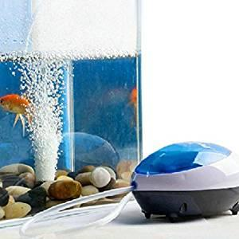
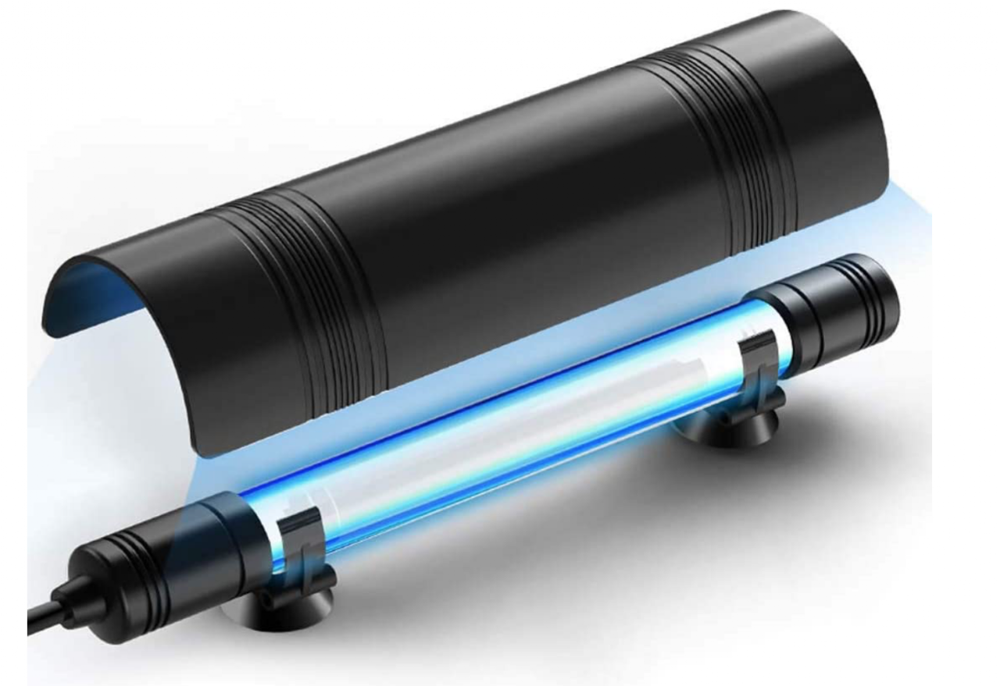

Bomba de aire de peceraAquarium air pump
+20.000 horas de servicio. Soltará el aire dentro del agua caliente.+20,000 hours of service. Releases air inside the warm water.
OrígenesOrigins · 01 · AireAir
El aire que respira un paciente, en una emergencia, puede entrar sin tratar — como en los ventiladores manuales que aparecen en las películas. Pero con muy poco más se puede preparar bien: humectado, a la temperatura adecuada y libre de patógenos. The air a patient breathes, in an emergency, may enter untreated — as in the manual ventilators we see in films. But with very little more it can be properly prepared: humidified, at the right temperature and free of pathogens.
ComponentesComponents

Bomba de aire de peceraAquarium air pump
+20.000 horas de servicio. Soltará el aire dentro del agua caliente.+20,000 hours of service. Releases air inside the warm water.

Calentador de acuarioAquarium heater
Bajo índice de fallo, rango de temperatura adecuado al subsistema.Low failure rate, temperature range suited to the subsystem.

Lámpara UVUV lamp
Esteriliza la cámara de aire. Protegida, nunca visible directamente.Sterilises the air chamber. Shielded, never visible directly.
01 · Humectación
El aire hay que llevarlo a la temperatura adecuada y darle el grado de humedad que necesita. Una bomba de aire de pecera — probadas a más de 20.000 horas de funcionamiento (consulta las indicaciones del fabricante) — suelta el aire dentro de un depósito de agua a temperatura controlada. The air must be heated to the right temperature and given the humidity it needs. An aquarium air pump — tested at over 20,000 hours of operation (check the manufacturer’s data sheet) — releases the air into a water tank at controlled temperature.
02 · Calentamiento
Para calentar el aire volvemos a la tienda de animales. Los calentadores de acuario tienen muchos años de experiencia, un índice de fallo bajo, fácil adquisición y un rango de temperatura similar al que necesita el subsistema. To heat the air, we go back to the pet shop. Aquarium heaters have many years of field experience, a low failure rate, easy availability and a temperature range similar to what the subsystem needs.
03 · Construcción
La forma más sencilla es usar un contenedor plástico o metálico que actúe como depósito de agua para todo el circuito. El tamaño debe alojar el aire de varias respiraciones. The simplest approach is to use a plastic or metal container as the water tank for the whole circuit. The size must accommodate the air of several breaths.
Si tomamos como máximo 10 ml/kg de aire y el ventilador está diseñado para 100 kg, son 1.000 ml de aire por inspiración. El depósito de aire debe ser superior a este volumen multiplicado por 2 (respiraciones) y por 3 (aire + agua + otros), por lo que conviene partir de un depósito de 6 litros como mínimo. If we take a maximum of 10 ml/kg of air and the ventilator is designed for 100 kg, that is 1,000 ml of air per inspiration. The air tank must exceed this volume multiplied by 2 (breaths) and by 3 (air + water + others), so a 6-litre tank is the recommended starting point.
Hay que prever entre 15 y 25 respiraciones por minuto. En el peor caso (1.000 ml × 25 r/min) tenemos 25.000 litros/hora. Con este valor se busca una bomba de aire dimensionada para tratar el aire que se va a respirar. We must plan for 15 to 25 breaths per minute. In the worst case (1,000 ml × 25 br/min) we obtain 25,000 litres/hour. With this figure we size the air pump that will treat the air to be breathed.
La bomba debe soltar el aire dentro del agua caliente, como muestra el diagrama, generando un flujo de burbujas que se humectan y calientan antes de salir al circuito de inspiración. The pump must release the air into the hot water, as shown in the diagram, producing a bubble flow that is humidified and heated before reaching the inspiration circuit.
04 · Limpieza
El agua debe cambiarse y el sistema limpiarse con regularidad para evitar la proliferación de bacterias, hongos y otros elementos dañinos. Una buena solución es introducir en el depósito una lámpara UV — también de tienda de acuarios — diseñada para eliminar bacterias y mantener el agua limpia. The water must be replaced and the system cleaned regularly to prevent the proliferation of bacteria, fungi and other harmful elements. A good solution is to place a UV lamp in the tank — also from an aquarium shop — designed to eliminate bacteria and keep the water clean.
Importante: la lámpara debe estar protegida y no ser visible directamente. La luz ultravioleta puede causar daños graves — quemaduras, ceguera. Sigue siempre las instrucciones del fabricante. Important: the lamp must be protected and not directly visible. Ultraviolet light can cause serious damage — burns, blindness. Always follow the manufacturer’s instructions.
05 · Seguridad
La válvula de seguridad es necesaria para evitar sobrepresiones o depresiones que impidan el funcionamiento del sistema. En el depósito conviene marcar el nivel máximo y mínimo de agua, de modo que se mantenga siempre dentro del rango de trabajo. The safety valve is necessary to prevent overpressure or depression conditions that would stop the system from working. The tank should be marked with maximum and minimum water levels, so the volume is always kept within the working range.